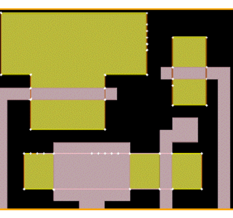

Viewing Fragmentation
Before investing
time and resources in a full RET batch tool run, you should test
your fragmentation settings to verify that they behave as expected.
Use the Calibre WORKbench or Calibre LITHOview application to perform
and plot fragmentation on a small, flat area of the layout. The Frag button
in the RET Flow Tool lets you display fragmentation vertices as
small circles without running OPC.
The following video shows how to load the fragmentation recipe and view the results.

Figure 1. Viewing Fragmentation in the
Calibre WORKbench Application
